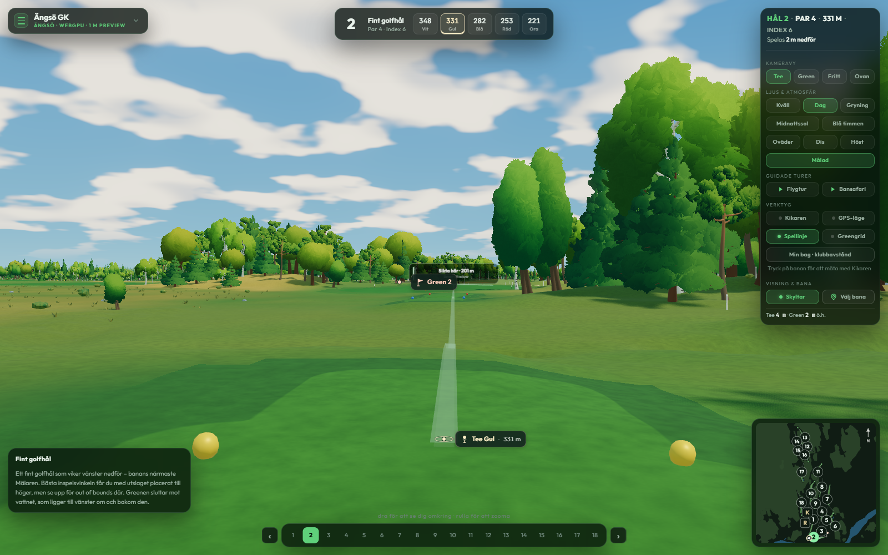
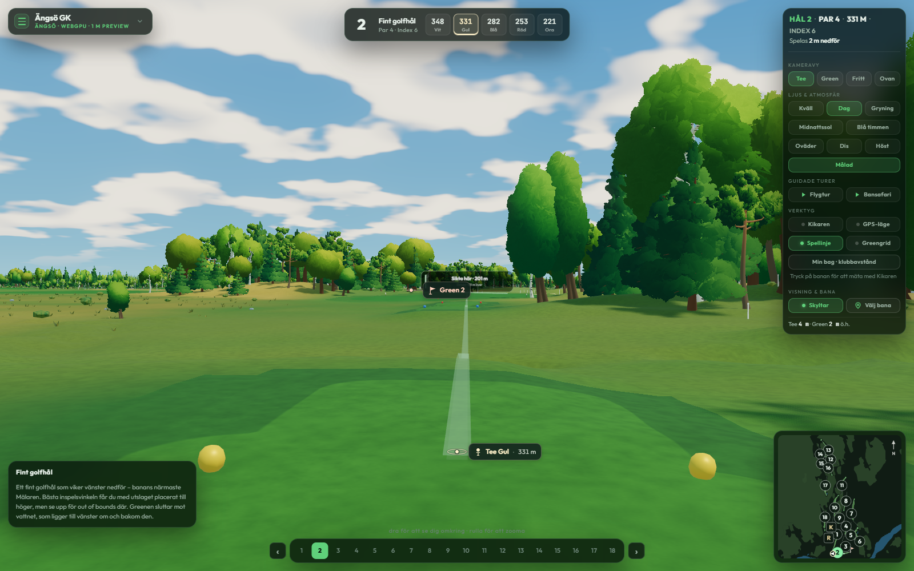

CANOPY REFINEMENT · BLENDER AND IN-APP REVIEW
Soft foliage with more depth.
Deeper shaded foliage and more focused sunlit highlights restore contrast to the soft canopies. Spruce keeps its uneven boughs; birch keeps its asymmetric, flowing crown. These trees are the default in Målad mode.


Previous shadingCurrentThe cameras and atmosphere match. Drag the divider to compare the same trees. The models keep exactly the same triangles at every detail level, with the same five foliage textures.